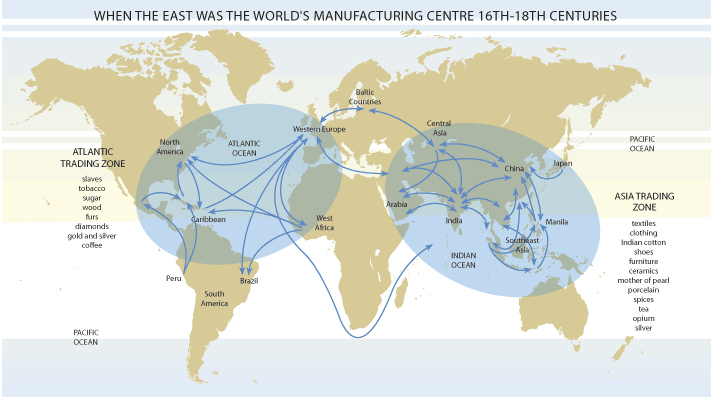
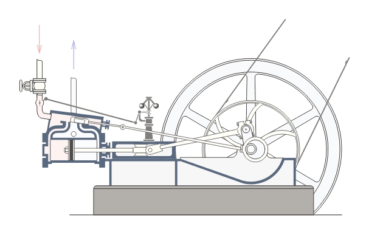
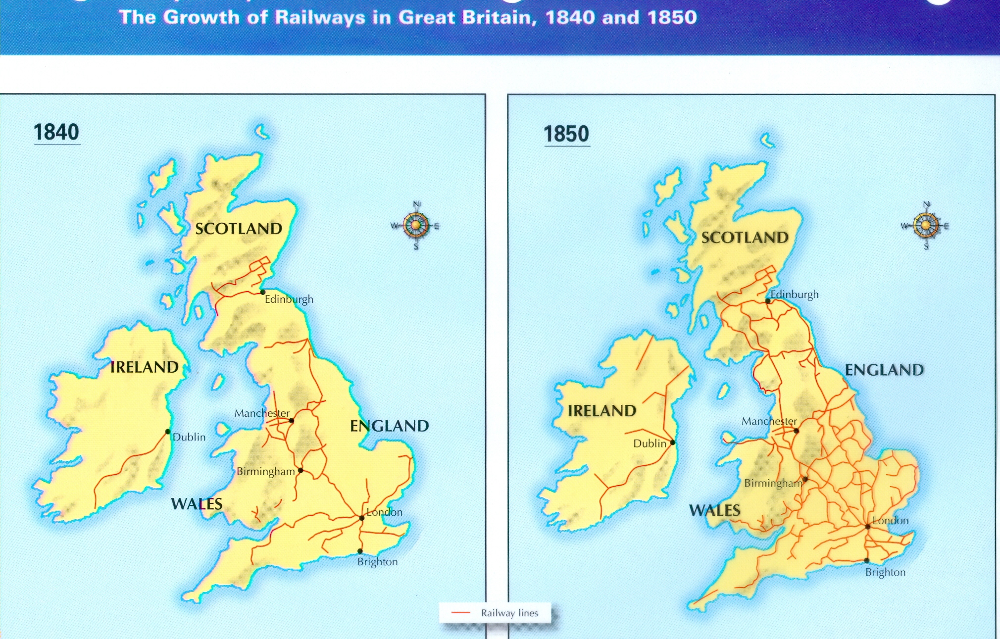
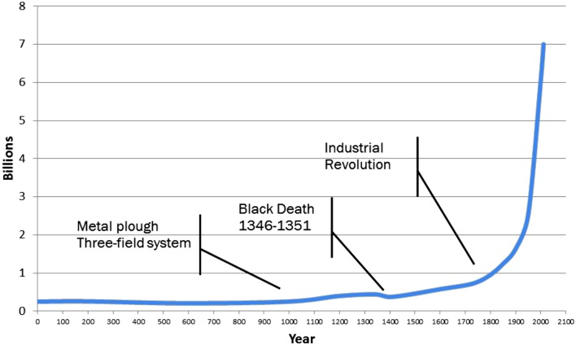

1st industrial revolution
How all these industries and workshops were created first of all? When this need to create at great quantity really started? How did the humanity went all this way to come here today? It all started after the age of discovery and exploration, which considerably increased the world trade as Europeans became able to trade with India and China, the biggest manufacturing centers of the world during these times. The sea became a way to the market, and with the discovery of the New World, the whole world became a market for these European explorators. So these European countries needed to produce things at great quantity to export and gain more profits.
One of
the example country could be UK  , which at 18th century, had the biggest
empire of the world.
, which at 18th century, had the biggest
empire of the world.

As its nickname "the empire where the sun never sets" indicates, the empire controlled almost the whole world, including most of the trading routes to the market, so unsurprisingly, it soon gained the highest GDP and was the largest world trading partner second only to China. That was the main factor for the increasement of its population. So now the capita developed, and the population have exploded. What else can we have develop with them? The science of course.

When you heat up water, you get steam. When you get steam, you will get steam engines. Beginning around 1760, through the advent of the steam engine, steam was powering everything from agriculture to textile manufacturing. Society used to be largely agrarian, life used to be centred around farming. And the textile workshops at the beginning mostly relied on the hydraulic forces to produce at great quantities. But with the invention steam power, those agrarian societies gave way to urbanisation, as before these steam engines were created, 1000 people needed to work on 1 hectare of land. After these creations, only 1 person was needed. Also before its invention, the workshops had to be in the upstream of the rivers so that they could use the hydraulic energy. It all changed with the invention of steam engine. So the Europeans began quickly to rely on steam power and machine tools, while steamships and railroads revolutionised how people were displaced. The factory emerged as the new centre of community life.
From the 18th century, beginning with UK
spreading to the European continents, mostly in north western european countries,
which led the emergence of colonial super powers such as France  and UK
and UK  .
.

Which later spread to other continents such as South america and East Asia :
-Britain  and France
and France  : 1760s
: 1760s
-India : 1770s
-USA  : 1790s
: 1790s
-Germany  : 1800s
: 1800s
-Japan  : 1870s
: 1870s
-Russia  : 1880s
: 1880s
-China : 1988
But :
-Factory life was difficult.
-Unskilled factory labourers were cheap and plentiful.
-They were made to work long hours, often in unsafe conditions.
-Even children worked in factories, putting in 14-hour shifts alongside adults.
Such conditions endured into the 20th century.

Ultimately, advancing industrialization created a middle class of skilled workers. Cities and industries grew more quickly than ever before, and economies grew along with them.
